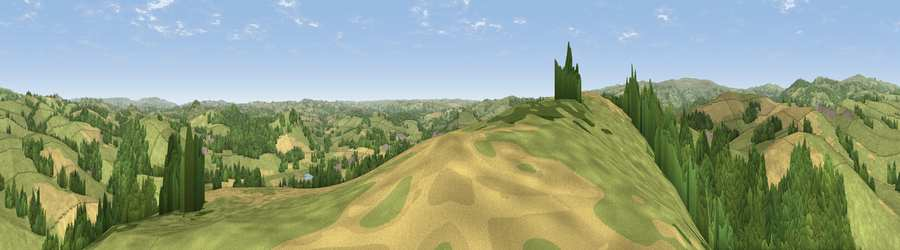

Viewpoint near Landscove
#8186 in England · top 17% of its area beats it · near LandscoveWhere it is
The exact computed spot (SX 77075 67575). Click the marker for map links.
The view, rendered

A 360° render of this exact spot computed from the terrain model, tree cover and land cover — summer colours, afternoon light, calibrated against photographs of famous viewpoints. Real trees, hedges and buildings will differ in detail.
The panorama
Grey silhouette: terrain skyline in each direction (720 bearings, Earth curvature and refraction included). Dashed green: skyline with trees (+15 m) and buildings (+8 m) as obstacles. Blue strip: how far the ground is visible on each bearing.
Where the view opens
Wedge length = distance to the farthest visible ground on that bearing (vegetation-aware). Rings at 10, 25 and 50 km.
What fills the view
52% grassland · 29% woodland · 19% cropland
Angular shares of the visible panorama (visual magnitude), not map area. Landscape diversity 0.45 (0–1 Shannon).
Key numbers
More beautiful places nearby
The staircase of upgrades: each row has a higher view potential than everything closer. Driving times are estimates from straight-line distance, calibrated against real road routing — check an actual route before setting out.
| Place | Direction | Drive | Score |
|---|---|---|---|
| Chuley Hill | WNW · 2 km | ~5 min | 65.9 |
| Viewpoint near Rattery | SSW · 5 km | ~11 min | 69.1 |
| Viewpoint near Buckland in the Moor | NNW · 6 km | ~13 min | 70.5 |
| Viewpoint near Buckland in the Moor | NNW · 6 km | ~14 min | 72.4 |
| Viewpoint near Buckland in the Moor | NW · 7 km | ~14 min | 80.7 |
| Beacon Hill | ESE · 10 km | ~20 min | 82.3 |
| Viewpoint near Stokeinteignhead | E · 16 km | ~28 min | 84.1 |
| Viewpoint near Hope | SSW · 30 km | ~47 min | 84.4 |
50.49504, -3.73444 · source: screening · position refined by local search. Computed location — check access rights before visiting.